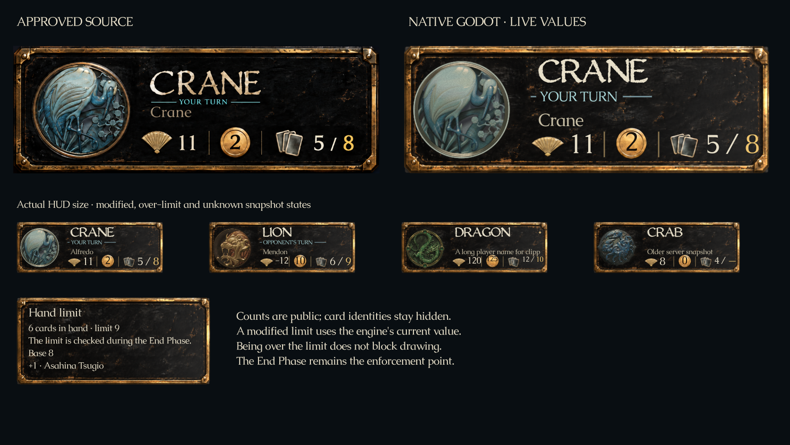
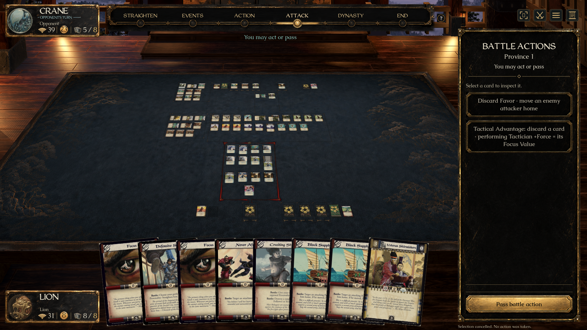
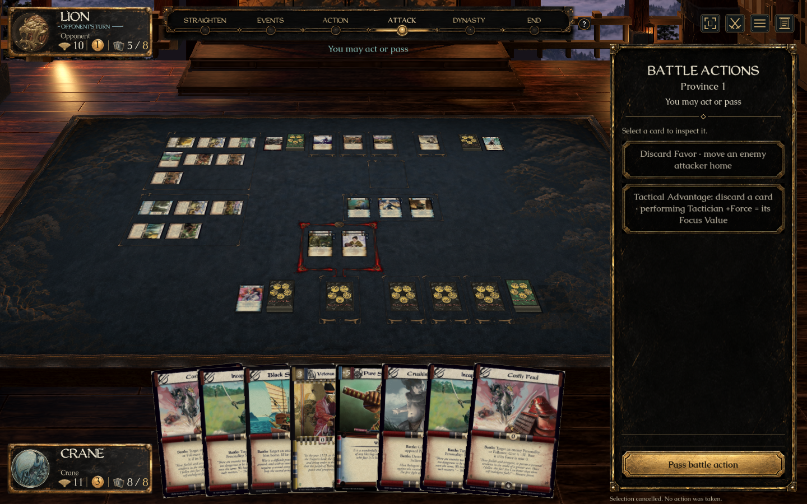
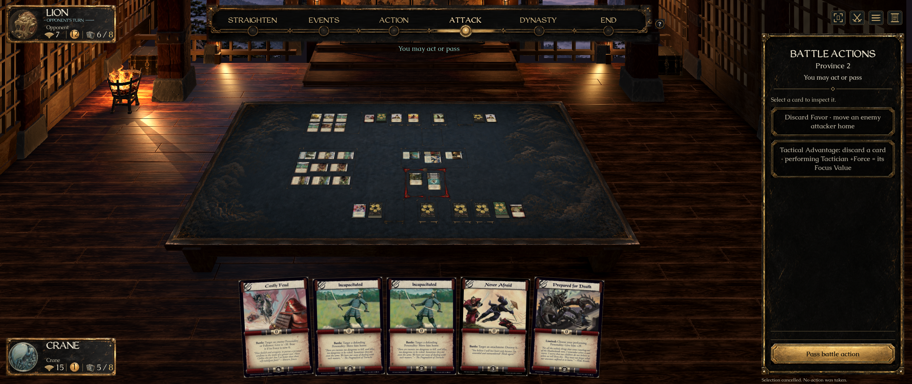
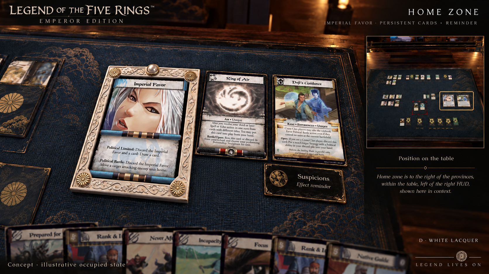
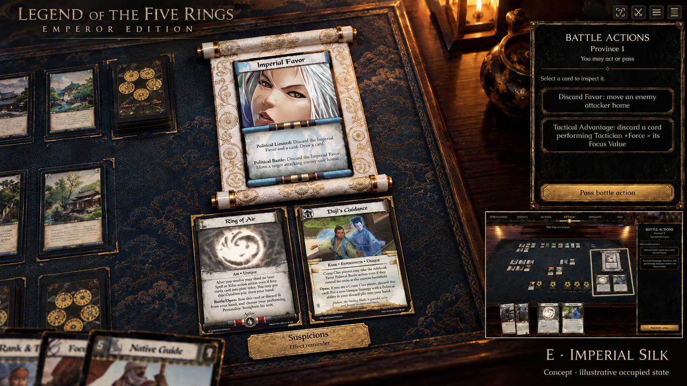

Placard A · native implementation
Meshy PBR material, measured Blender geometry, approved artwork projection and a native Godot bake. Honor, available Gold and hand count / limit remain live. Hover the hand tracker for its current limit and public modifiers.
Approved source beside the actual Godot renderer

Actual WeatheredQuill/Caudex typography and the existing clan emblems remain in use. This is a fidelity comparison, not a pixel-difference claim. The normal-size row includes modified, over-limit and unknown-limit snapshots.
Current room · playable presentation

Integrated preview includes the existing room, menu and sidebar work. The placard PR remains separate.
Smaller window · 1440 × 900

Wide window · 2560 × 1080

Imperial Favor · new concepts for approval
Favor receives a distinct ivory-white border with Japanese ornament. Its reminder is separate from actual persistent cards and from the small Suspicions effect reminder. These concepts have not been implemented.
D · White lacquer
A restrained ivory frame with pearl and chrysanthemum details.

E · Imperial silk
An embroidered white court scroll, with supporting cards below.

F · Noble crest
A stronger ceremonial silhouette with sculpted white cloud flourishes and a central chrysanthemum crest.

Imagegen concepts are illustrative; original scans, legal actions and authoritative state will be used in implementation. Only occupied entries appear. Ordinary Events are not automatically persistent.